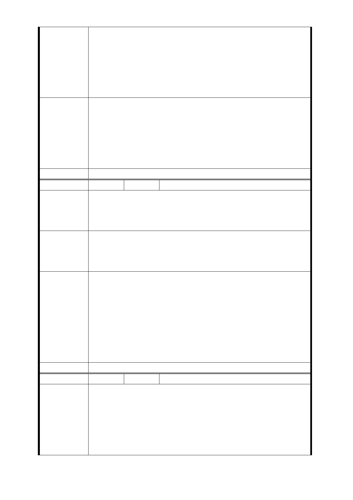

效率，縮短建造期間（仍需兼顧建造品質）。
2. 提高獎勵容積，權益分配，以降低地主的找補成本。
3. 有關租屋期間臺北市民的相關社福，請協調相關局處辦理
。
Ps：藉由聯合開發改善市容、帶動地區繁榮，其立意甚佳，
雖因所居屋況良好，對此政策仍表贊成，希主政局處、都審
委員就本人所建議理由，詳加考量，以創造雙贏的局面。
1. 1.有關「降低地主租金支出」等議題，捷運工程拆遷房屋
係依臺北市舉辦公共工程拆遷補償自治條例及相關規定
市府回應
意見
辦理補償。
2. 2.103 年 9 月 16 日第四次專案小組委員審查意見：LG03
車站調整車站位置改設於忠義國小，取消原車站位置捷五
、捷六土地開發區，使用忠義國小學校用地，並增設捷十
土地開發區（面積 1199 平方公尺）。
委員會決議 同編號交一－1 委員會決議。
編 號 捷五-3 陳情人 彭○枝
1. 軍方土地屬國有地，不損民益，也無需拆建物及徵收土地
陳情理由
。
2. 出口設在前後方，如有緊急狀態，可分散逃生。
3. 可提供中華路民眾方便服務。
1. 捷五可建議設在西藏路上，出口設在同一側。
建議辦法
2. 政府國家建設係在造福民眾，不是擾亂民眾權益，造成官
民對立局勢，請惠予參辦。
3. 請再規劃最佳方案。
1.臺北市區段東門站係因道路較寬且兩側人行道寬度達以上
，故出入口等設施可設置於人行道上；但萬大線沿線之西藏
路及萬大路現有人行道寬度約不等，加上交通流量繁重，難
市府回應
意見
以縮減車道以拓寬人行道方式設置出入口及通風井，故仍必
須於基地內設置捷運出入口及通風井等相關設施。
2. 103 年 9 月 16 日第四次專案小組委員審查意見：LG03 車
站調整車站位置改設於忠義國小，取消原車站位置捷五、捷
六土地開發區，使用忠義國小學校用地，並增設捷十土地開
發區（面積 1199 平方公尺）。
委員會決議 同編號交一－1 委員會決議。
編 號 捷五-4 陳情人 王○文
100.12.7
不要拆除，此造成住戶無處可住，且可使用公有地。
100.12.17
陳 情 理 由 1.補償辦法太差，無法符合現況居住。
2.房子被拆就流落街頭，不要拆私人民宅。
3.整個站體與出口位置不符合現況需求。
4.都市更新不符現況環境應從天橋開始納入。
- 54 -